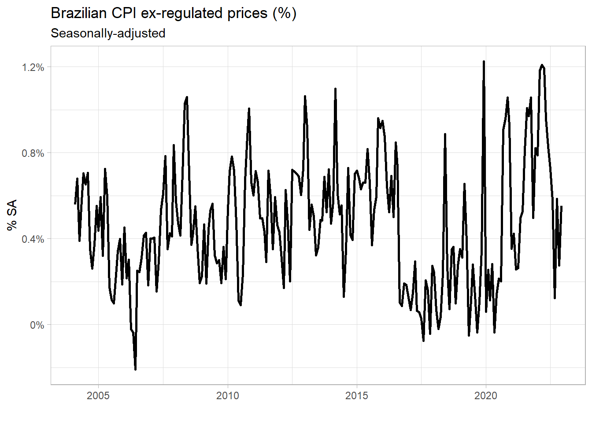
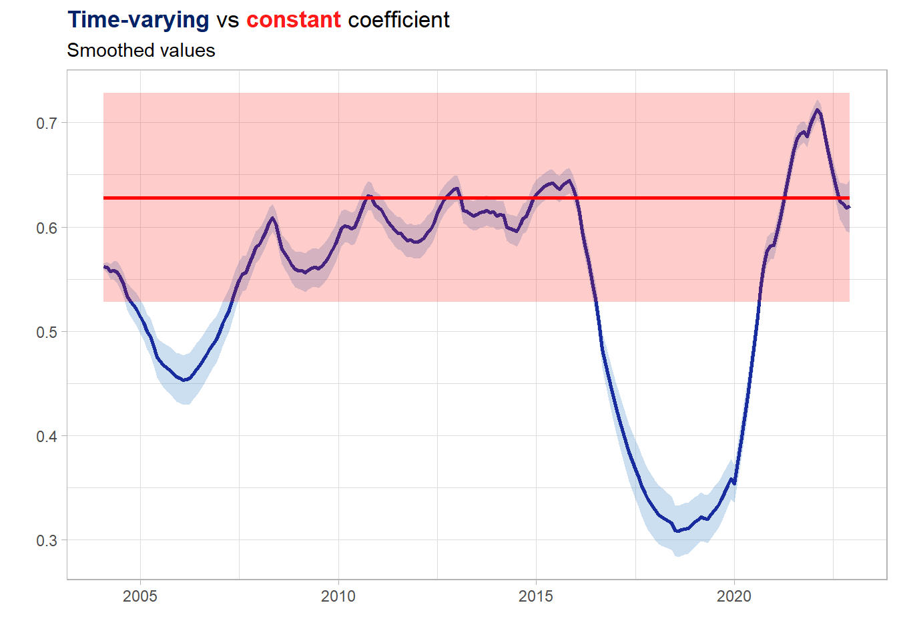
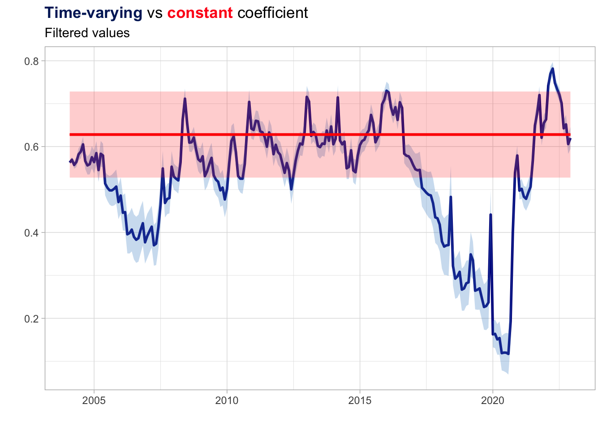

library(tidyverse)
library(rbcb)
library(seasonal)
cpi_br <- get_series(
code = 11428,
start_date = "2004-01-01",
end_date = "2022-12-01",
as = "ts"
)
cpi_br_sa <- final(seas(cpi_br))
cpi_br_df <- cpi_br_sa %>%
timetk::tk_tbl(rename_index = 'date') %>%
rename(c('cpi_sa' = value)) %>%
mutate(
cpi_sa_lagged = dplyr::lag(cpi_sa, 1)
) %>%
drop_na()11 Time-varying regression coefficient
Essential tools for modern economic analysis
When estimating a time series model, we are often questioning whether the relationship of interest has changed over time – in other words, whether the coefficient \(\beta\) is the same over the entire period. For example, there’s a vast literature on macroeconomics showing that inflation inertia is affected by several economic and institutional factors. We can employ a state-space model to empirically address this concern, by means of a stochastic \(\beta\) coefficient in a AR(1) equation for inflation.1
For this exercise we’ll use the CPI in Brazil excluding regulated prices such as public transport, energy and others. After importing the series from the Brazilian Central Bank API with the rbcb package, we’ll compute the seasonally-adjusted series on the original data with the seasonal package (see (seasonality?)).
Show code
cpi_br_df %>%
ggplot(aes(x = date, y = cpi_sa)) +
geom_line(lwd = 1) +
theme_light() +
scale_y_continuous(labels = function(x) paste0(x, '%')) +
labs(
title = 'Brazilian CPI ex-regulated prices (%)',
subtitle = 'Seasonally-adjusted',
x = '', y = '% SA'
)
We’re primarily interested in estimating the \(Z_t\) matrix, which contains the coefficient associated to the hidden state process \(x_t\) – which represents the \(\beta\) coefficient in this case. However, instead of a single coefficient, we’ll have one for each \(t\). This has implications for how we should declare the model objects to the MARSS function. In particular, time-varying parameters are specified by passing in an array of matrices where the second dimension of the array is the data and the third dimension is time.
It’s worth noting that in this case we might have two time-varying coefficients – the \(\beta\) for the lagged inflation and the intercept term. If we wanted the intercept term to be time-varying, we should place it inside the second dimension of the \(Z\) matrix. We’ll do it for demonstration purposes only. However, by setting the variance of the intercept term equal to zero in the \(Q\) matrix – the first diagonal element – we’re making it deterministic. The two main lessons here are: 1. Everything we want to be time-varying should be placed in the \(Z\) matrix and, thus, related to the state process; and 2. We can make a state variable deterministic by setting its variance to zero.
library(MARSS)
# Variables
t <- nrow(cpi_br_df)
y <- matrix(cpi_br_df$cpi_sa, nrow = 1)
y_lagged <- matrix(cpi_br_df$cpi_sa_lagged, nrow = 1)
# Model specification
B <- diag(2)
Q <- matrix(list(0,0,0,"sigma.ar1"), 2, 2)
Z <- array(NA, c(1, 2, t))
Z[1, 1, ] <- rep(1, t) # Intercept term
Z[1, 2, ] <- y_lagged
R <- matrix("r")
A <- matrix(0)
x0 <- list(x0 = matrix(0, nrow = 2)) # initial values
ss_terms <- list(B = B, Q = Q, Z = Z, A = A, R = R)
ss_fit <- MARSS(y, inits = x0, model = ss_terms, silent = TRUE)
# Use the Kalman Filter and Smoother
ss_fit_kf <- MARSSkfss(ss_fit) After the process of estimating the model is finished, we can extract the time-varying \(\beta\) located in the second row of the states element – the first row is the deterministic intercept. It would be interesting to compare it with the time-constant coefficient estimated from a standard AR(1). The results from the two models are shown below together with the respective confidence intervals. Also, we used the ggtext package which allows us to pass in HTML code to create a custom title for the plot.
library(ggtext)
## Benchmark
ar1_fit <- arima(cpi_br_sa, order = c(1,0,0))
## Plot
out_tidy <- cpi_br_df %>%
mutate(
coef.dlm = ss_fit_kf$xtT[2, ],
coef.dlm.se = ss_fit_kf$VtT[2, 2, ],
coef.dlm.low = coef.dlm - 1.96*coef.dlm.se,
coef.dlm.high = coef.dlm + 1.96*coef.dlm.se,
coef.ar1 = ar1_fit$coef["ar1"],
coef.ar1.se = ar1_fit$var.coef["ar1", "ar1"] %>% sqrt(),
coef.ar1.low = coef.ar1 - 1.96*coef.ar1.se,
coef.ar1.high = coef.ar1 + 1.96*coef.ar1.se
)Show the code
out_tidy %>%
ggplot(aes(x = date)) +
geom_line(aes(y = coef.dlm), color = "darkblue", lwd = 1) +
geom_ribbon(aes(ymin = coef.dlm.low, ymax = coef.dlm.high,
xmin = min(date), xmax = max(date)),
alpha = 0.3, fill = "steelblue3") +
geom_ribbon(aes(ymin = coef.ar1.low, ymax = coef.ar1.high,
xmin = min(date), xmax = max(date)),
alpha = 0.2, fill = "red") +
geom_line(aes(y = coef.ar1), color = "red", lwd = 1) +
theme_light() +
theme(plot.title = element_markdown(lineheight = 1.1),
axis.title = element_text(size = 13)) +
labs(
title = "<span style='color:#002266;'><b>Time-varying</b></span> vs <span style='color:#ff1a1a;'><b>constant</b></span> coefficient",
subtitle = 'Smoothed values',
x = "",
y = ""
)
For most of the period, we can’t say the time-varying coefficient is statistically different from the static one. However, the value of this approach lies precisely in the timeliness it detects variations in the relationship of interest. Since the prevailing relationship was re-established not so long after the departure was large enough to exceed the confidence bands, it’s very likely that this behavior would go unnoticed in the standard approach. On the other hand, has the departure persisted for many periods ahead the likely effect on the static coefficient would be a progressive shift downwards – which, in turn, would improve the fit in the more recent part of the sample at the expense of a poorer fit elsewhere.
Remember that by using the smoothed values we are, in fact, using the information provided by the entire sample. To see whether this changing behavior of \(\beta\) would be spotted in real-time, we should use the filtered values - \(xtt\) and \(Vtt\).
out_filtered_tidy <- cpi_br_df %>%
mutate(
coef.dlm = ss_fit_kf$xtt[2, ],
coef.dlm.se = ss_fit_kf$Vtt[2, 2, ],
coef.dlm.low = coef.dlm - 1.96*coef.dlm.se,
coef.dlm.high = coef.dlm + 1.96*coef.dlm.se,
coef.ar1 = ar1_fit$coef["ar1"],
coef.ar1.se = ar1_fit$var.coef["ar1", "ar1"] %>% sqrt(),
coef.ar1.low = coef.ar1 - 1.96*coef.ar1.se,
coef.ar1.high = coef.ar1 + 1.96*coef.ar1.se
)Show the code
out_filtered_tidy %>%
ggplot(aes(x = date)) +
geom_line(aes(y = coef.dlm), color = "darkblue", lwd = 1) +
geom_line(aes(y = coef.ar1), color = "red", lwd = 1) +
geom_ribbon(aes(ymin = coef.dlm.low, ymax = coef.dlm.high,
xmin = min(date), xmax = max(date)),
alpha = 0.3, fill = "steelblue3") +
geom_ribbon(aes(ymin = coef.ar1.low, ymax = coef.ar1.high,
xmin = min(date), xmax = max(date)),
alpha = 0.2, fill = "red") +
geom_line(aes(y = coef.ar1), color = "red", lwd = 1) +
theme_light() +
theme(plot.title = element_markdown(lineheight = 1.1),
axis.title = element_text(size = 13)) +
labs(
title = "<span style='color:#002266;'><b>Time-varying</b></span> vs <span style='color:#ff1a1a;'><b>constant</b></span> coefficient",
subtitle = 'Filtered values',
x = "",
y = ""
)
We’ll use a AR(1) model for simplicity, but the same logic applies to more complex models.↩︎